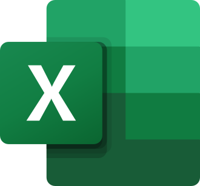
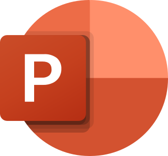
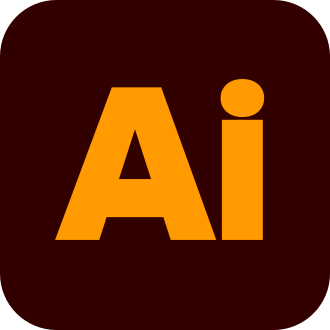

Applications
Ouvrez une application directement dans votre navigateur.
Bureautique

ExcelTableurs et feuilles de calculÉquivalent de Microsoft ExcelOuvrir ↗
PowerPointPrésentations et diaporamasÉquivalent de Microsoft PowerPointOuvrir ↗Création

IllustratorIllustration et création vectorielleÉquivalent de Adobe IllustratorOuvrir ↗